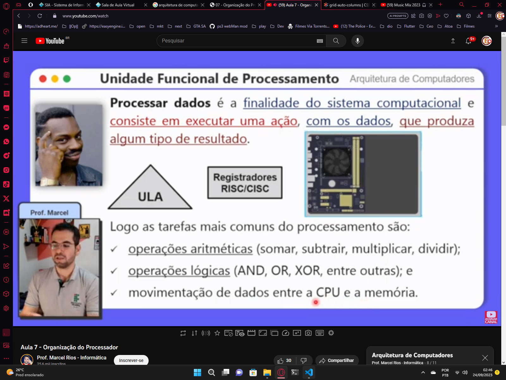
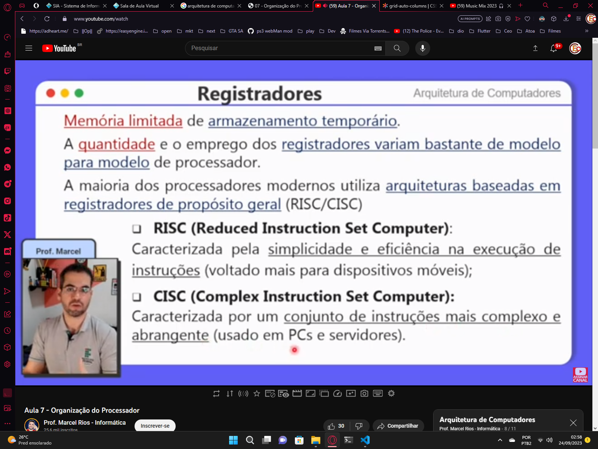

Organização do Processador
CPU
responsável por processar e executar os programas armazenados na memória principal
é composta por 3 partes distintas:
- Registradores
- Unidade de Controle UC
- Unidade Lógica Aritmética ULA
pode ser dividida em 2 categorias funcionais:
-
Unidade Funcional de Controle
agrupa: (UC) -
Unidade Funcional de Processamento
agrupa: (registradores e ULA)
Diagrama de Funcionamento Da CPU

Unidade Funcional de Processamento
considerada o "núcleo" da CPU
exemplos de operações executadas pela ULA:- soma
- multiplicação
- operações lógicas: ( AND, OR, NOT, XOR ... )
- incremento
- decremento
- outras ...
não lida diretamente com as intruções do programa, mas recebe as intruções da UC
Registradores
Unidade Funcional de Controle

CI e RI

Decodificador de Instruções

RDM e REM

Considerações Finais

Questões
Questão 1

Resposta
Questão 2

Resposta
Questão 3